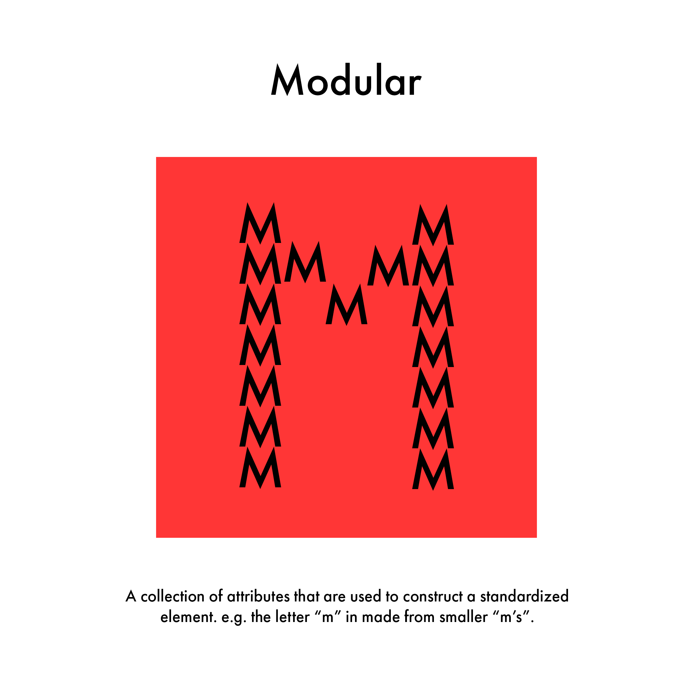
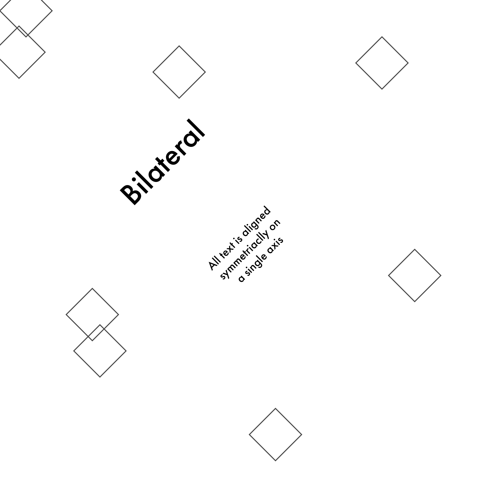
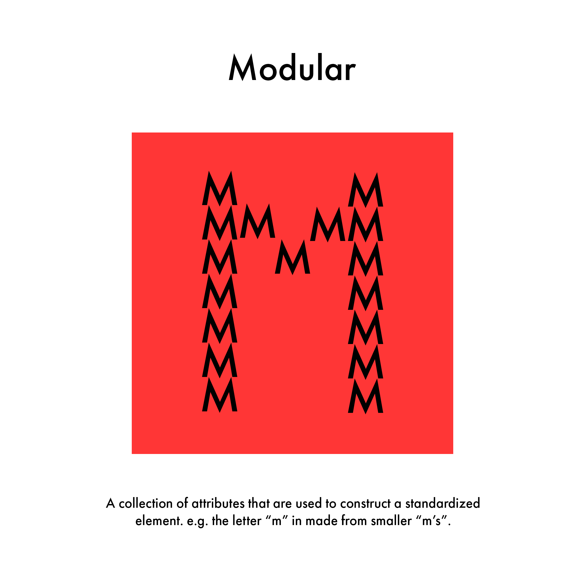
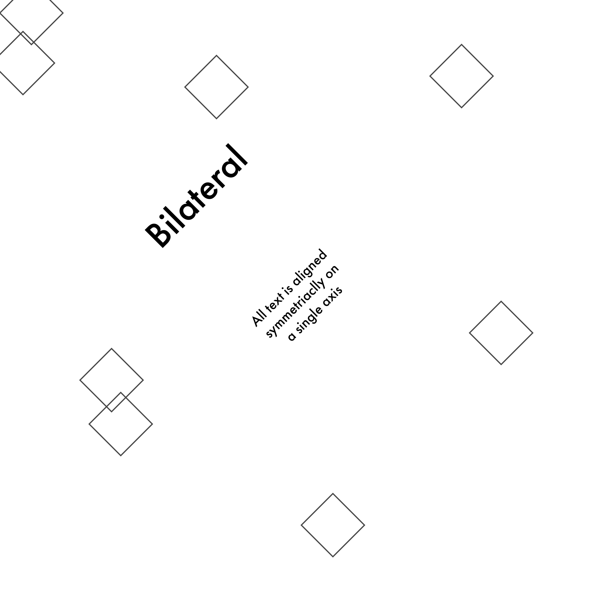

TYPE TASK
 




I was given a task to showcase and explain the 8 different typographic systems, I did this in two ways, writing a summary about each system with a little illustration to the right of it to help explain what it is. For the second part I created 8 different illustrations further detailing each system by structuring them into their actual system.
I used Adobe Illustrator to create all of these images as it’s the easiest software that I know, and also the most efficient for creating illustrations. My work was made using vector graphics as this gives the best quality without compromise.
I made this illustration in illustrator using lines and text. I decided to show my elements as if they are placed on an axis, I did this because it represents what an axial system is. I then used the colour red to give my illustration some variety and interest.
I went for a different style with this one, using circles as the structure for my text. I wrapped my text around the circles to show how radial can be used. I stuck with the theme of red as I knew once I uploaded this to my website It would fit the theme.
I started off with creating a simple circle with no fill, I added a very thin stroke as a baseline for my text. I didn’t want to confuse this illustration with radial as its very similar, so I arched and warped the text around the circle but instead I made the circle get smaller and so with the text.
This one was a fun one, I had no orientation about this, apart from the title of course. I decided to dot text underneath the title giving each one a random position, I then gave all of them a red underline to again fit my theme.
This one was a bit easier as I had some guidelines to go with. I started off by finding the centre point and adding a line vertically, this made it easier to add the grid lines to the right. I wanted to make the illustration look like a book, as books use a grid format. I aligned the text to the right.
This one was more challenging, as I didn’t quite know how to warp the text into a flag like shape. I tried using warp but couldn’t achieve the quality I wanted. I ended up finding a setting called “flag” which gave me exactly what I needed.
For modular I wanted to make something a bit different, I added a red square in the centre and made the letter “m” out of m’s. I did this because it clearly represents the meaning of modular.
I didn’t add any colour to this one, the reason being was because I liked the b&w look of this, it keeps it minimalistic and clean. I used squares in the background to help show the orientation of the image.
CARP TASK


UX TASK

The aim for my website is to be able to show and properly represent my work in the best light. I will be using a variety of techniques to make my website easily accessible and unique. Some things I could add to make my website more accessible for everyone, contrasting colour between text, bold titles, tags for different sections, resizable text, the use of illustrations instead of text. I intend to add these features while producing my website. There are some features that I wish to not add to my website because of my personal experience while browsing the web, these features include login screens to access the website, advertisements blocking visibility, messy and unorganized pages, long paragraphs. These are the things I will be trying to avoid. My target audience is hard to pinpoint, however I concluded that the only people who should be viewing my website would be, clients, teachers, and the occasional clicks from random people. Any ethnicity goes and or gender. However, age should be 18+. I have created a flowchart and wireframe below to further help create the structure for my website.
This is a wireframe for my website, there is three pages that I intend to make, the Home page, About page and the Contact page. I have sketched up the basic structure of each page. I made this using Adobe Illustrator’s box tool and text tool. The first page contains a header, footer, and a mid-section. The mid-section has three boxes in it, each box will contain an image from each task, there are three tasks, Type Task, Carp Task and UX Task. Each task will fit an image and a summary / reflection next to it as referenced in the wireframe.
The About page has a similar structure but in the mid-section will be my face and a summary of what I do next to it. The last page the “contact” page follows the same structure for the header and footer, but again the mid-section Is different. Having a small box in the centre three smaller boxes inside which acts as an interface for an emailing system. Below that would be links to my socials.
This is the flowchart of my website; this clearly represents the order in which my website functions. This helps set a layout / structure for which I can follow. I made this using Adobe Illustrator as it’s a program I am familiar with. I wanted a nice clean look for my flowchart so its easy to follow. I used basic shapes and colouring to do this. I also capitalised my letters and chose a blocky font to make it easy to read. The main sections are highlighted in red, as this keeps my theme of red and also portrays the importance of the main tags.
CODING TASK
This is the coding task, throughout these past couple months I ploughed through 6 worksheets that taught me how to make a website, these worksheets helped me understand to learn the basics of HTML and CSS and helped me to be able to create my own website. Below is the link to my GitHub page with all my worksheets from coding.
This is a quick snippet of the most recent worksheet I did, this is the HTML part of the coding, the basic structure for the website. In this code I learned how to add my own fonts by using google fonts and exporting the URL and pasting it into the header and the top of the page in the html. I also learned how to use buttons, add images, use div’s and much more.
REFLECTION
I have been learning CSS and HTML to produce a website, I gained a lot of knowledge during this, reading articles, doing worksheets, and experimenting with my own code. I learned how to effectively use Visual Studio Code and can now code at a decent level. I’m surprised how fast I caught on as I always assumed coding was an impossible language to learn, however I’m still not the best and have a long way to go. For example, when creating my website I struggled positioning all my elements within a section. I later found out that creating “divs” in my sections really helped organise everything. I still believe I’m not positioning my elements in the most efficient way as I’m relying on using “margins” to move everything around. This is one thing I need to improve on for the future.
Another issue I encountered was adding a background image to my website, I didn’t want to be stuck with just a bland colour for the background I wanted to design my own. I created my own artwork in photoshop. Not knowing what size, I needed for a website I gave it the standard native resolution for most monitors “1920 x 1080”. The issue I encountered was using this as a background image. I started off with importing this image into the code with a simple “img src.. however this just made my image go in front of everything. I needed a way to fix the position and somehow set it behind everything. I managed to figure out this issue by changed the location of that strip of code to the header. This way the image was set behind everything. I later found out that to fix an image in a position, so it doesn’t move when you scroll / resize was to add a “position: fixed”. This locked my background image, so it didn’t move.
My main struggle was not creating the website but finding out a way to showcase off my work, I knew I already had mock-ups / drawings of my website, but I didn’t know how I wanted to show off my work whether that would be putting it all into a pdf and adding buttons underneath each sub-section or screenshotting the PDF’s and uploading that to the website. I messed around a little and found out that uploading a screenshot of my work and a short reflection to the side of it was the best way to showcase off my work. In the future I intend to add links to the PDFs at the bottom of each task to furthermore show off my work in more detail. Overall, I am feeling proud about my website and how much ive accomplished over this short time. I definitely have some improvements, with the layout, and ultimately the design of the website however overall, I am satisfied.